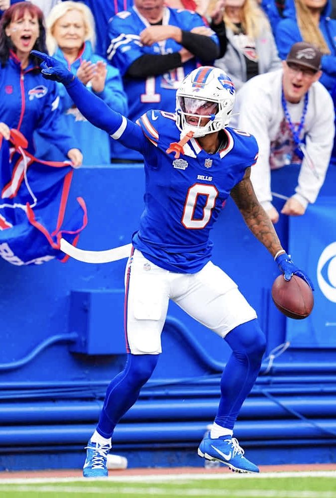

Keon Coleman is an American professional football wide receiver for the Buffalo Bills of the National Football League.
He played college football for the Michigan State Spartans and Florida State Seminoles and was selected by the Bills in the second round of the 2024 NFL draft.
(This came STRAIGHT his Wikipedia page obviously)
